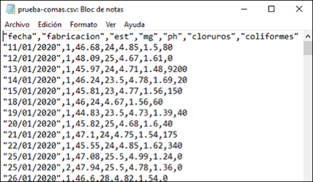
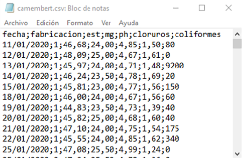

4 La organización de los datos y el flujo de trabajo.Los datos ordenados o arreglados (tidy data)
4.1 Definiciones y términos útiles
Población y muestra
Una población es un conjunto de de personas, cosas o, en general, objetos en estudio. A veces, una población es demasiado grande para que podamos abarcarla completa; para poder estudiarla, obtenemos una muestra, que consiste en un subconjunto de la población que hemos seleccionado para su estudio. El proceso de obtener una muestra se llama muestreo, y se realiza de acuerdo con normas y procedimientos específicos.
En muchas ocasiones, cuando se recogen los datos como resultado de una experimentación, definimos la población como todos los resultados que podríamos haber obtenido. Llamamos a este conjunto de posibles resultados una población conceptual. Por ejemplo, cuando medimos el \(pH\) de varias muestras de leche, la población es el conjunto de todos los resultados posibles que podríamos haber tenido. Muchos problemas de ingeniería y tecnología se refieren a poblaciones conceptuales.
En la mayoría de las ocasiones, nuestros datos provienen de una muestra obtenida de una población,
Cuando tomamos una muestra, debemos estar seguros de que contiene las propiedades que queremos estudiar en la población. En ese caso, decimos que la muestra es representativa: los individuos de la muestra son representativos de la población. Para que la muestra sea representativa, debe ser obtenida mediante un muestreo aleatorio. Una muestra aleatoria simple de tamaño \(n\) consiste en \(n\) individuos de una población, elegidos de forma que cada conjunto posible de \(n\) individuos tiene la misma probabilidad de ser elegido.
El concepto de probabilidad se explica de forma detallada en el capítulo 9
Parámetro y estadístico
Un parámetro es una característica de una población. Podemos estimar su valor mediante la extracción de una muestra, que utilizaremos para calcular un estadístico muestral. Llamamos estadístico a un número que representa una propiedad o característica de la muestra, y constituye una estimación del valor de un parámetro de la población que estamos estudiando.
Variables y casos
A los objetos descritos en un conjunto de datos los llamamos casos, de forma genérica. A veces, estos casos pueden corresponder a personas; en ese caso podemos llamarlos individuos. Cuando los objetos que estudiamos no son personas, como es lo habitual en el entorno industrial, utilizamos la nomenclatura genérica.
Un atributo es una característica que define una propiedad de un objeto, persona o cosa. Por ejemplo, edad, peso, altura, sexo, color de ojos, son atributos de una persona. Llamamos variable a una característica cualquiera de un individuo o caso que puede ser medida u observada. Una variable puede tomar diferentes valores en diferentes individuos o casos.
Según estas definiciones que acabamos de ver, una muestra está formada por un conjunto de casos, y cada caso contiene un determinado número de variables, que contienen los valores que hemos analizado o medido.
Tipos de variables
Algunas variables, como el color, sirven para clasificar los individuos en categorías. Otras, como la altura o el peso de un individuo, pueden tomar valores numéricos con los que podemos hacer cálculos. Por ejemplo, podemos sumar la altura de varias personas, pero no tiene sentido sumar los colores del arco-iris (aunque sí podemos contarlos, y hacer cálculos con estos recuentos). También podemos categorizar variables continuas: podemos clasificar nuestro grupo de personas en altas o bajas, y podemos contar cuántas personas entran en cada categoría.
| Variables cualitativas o categóricas |
Variables cuantitativas o métricas |
||
|---|---|---|---|
| Nominales | Ordinales | Discretas | Continuas |
| Valores en categorías arbitrarias | Valores en categorías ordenadas | Valores enteros en escala numérica | Valores continuos en escala numérica |
| (sin unidades) | (sin unidades) | Unidades contadas | Unidades medidas |
Una variable categórica coloca a un individuo en uno o más grupos o categorías
Una variable métrica toma valores numéricos con los que tiene sentido realizar cálculos aritméticos como sumar, restar, etc.
Las variables categóricas se conocen también como variables cualitativas porque indican cualidades.
Las variables métricas se conocen también como variables cuantitativas porque indican cantidades.
Algunas veces se usa el término cualitativo de forma incorrecta para referirse a la calidad de algo, por ejemplo, cuando alguien dice: “Este envase es muy cualitativo”. La forma correcta sería: “Este envase es de gran calidad”.
En realidad, cualitativo no proviene calidad sino de cualidad, y hace referencia a las características o propiedades de un objeto o fenómeno, sin implicar juicio de valor. Como hemos visto, este término se usa en estadística para describir variables que representan categorías o atributos, como el color, el tipo de material o la marca, sin medir cantidades.
Reglas básicas para establecer los nombres de las variables.
Según hemos visto, existen diferentes tipos de variables, cualitativas (categóricas) y cuantitativas (métricas). Normalmente, los valores de las variables categóricas se describen mediante textos del tipo “color blanco”, “hombre”, “mujer”, “alto”, “bajo”, etc. Suelen corresponder con características descriptivas, y por lo tanto, no puede hacerse cálculos directamente con ellos, a menos que se hayan resumido, por ejemplo, mediante un conteo. Las variables métricas consisten en valores numéricos, que pueden ser enteros o continuos, y pueden utilizarse directamente para hacer cálculos tales como sumas, etc.
Una variable está descrita siempre por un nombre, que designa la variable, y un valor o conjunto de valores, que corresponden a los casos. Este conjunto de valores, como acabamos de ver, pueden ser textos o números.
Ejemplos de valores de texto: “Carlos”, “fruta”, “Lluvia fuerte”, “muy ácido”, “sabor a fresa”
Ejemplos de valores numéricos: \(1\); \(7\); \(10,65\)
Siempre que sea posible, utilizaremos el nombre del atributo o característica que estamos midiendo o analizando, o su abreviatura, para designar una variable; por ejemplo, si estamos recogiendo la altura de una serie de personas, llamaremos altura a la variable; si estamos recogiendo el peso, usaremos el nombre peso, etc.
A veces, asignar un nombre a una variable no es todo lo fácil que podría parecer a simple vista. Por ejemplo, ¿qué nombre daríamos a una variable que va a recoger los valores de \(pH\) de la leche en una cuba de queso en el momento de añadir el cuajo? Está claro que \(pH\) no es suficiente, porque en el proceso hay varias medidas de \(pH\) y sería bueno que pudiésemos diferenciarlas con facilidad. En un caso como éste, es probable que necesitemos utilizar varias palabras o abreviaturas que describan mejor el nombre de la variable.
Para la construcción correcta de estos nombres, se han establecido un conjunto de reglas, con el objetivo de evitar errores y facilitar el intercambio de los datos entre diferentes programas de análisis. Son éstas:
Un nombre válido consiste en una combinación de letras, números y signo de subrayado (\(\_\))
Un nombre de variable no puede empezar por un número, un punto o un signo de subrayado (\(\_\)); debe empezar siempre por una letra.
Los nombres de variables irán siempre en minúsculas. Según esta regla, \(Peso\) no es un nombre válido, pero \(peso\) si lo es.
No utilizaremos espacios en blanco, acentos ni caracteres especiales como \(\tilde{n}\), \(\%\), guiones o paréntesis.
Hay veces en que nos interesa unir varias palabras para construir un nombre de variable. Se utilizan diferentes formas de unir palabras, por ejemplo:
un punto, como en \(peso.en.cm\),
lo que se ha llamado escritura de camello (camelCase), que se llama así por el uso de mayúsculas y minúsculas mezcladas (\(PesoEnCm\))
el signo de subrayado \(\_\), como en \(peso\_en\_cm\)
Algunas de estas opciones son utilizadas en distintas comunidades de usuarios, por ejemplo la opción 1 es utilizada en la guía de estilo de Google, y la opción 2 es muy utilizada por los programadores del entorno de los lenguajes de Microsoft. Nosotros utilizaremos el signo de subrayado (\(\_\)), que es la forma más usada en el entorno de programación de R.
Siempre se separarán las palabras mediante el signo de subrayado (_) para facilitar la lectura. Así, aunque \(temperatura1\) es un nombre válido, preferiremos \(temp\_1\); es más corto y de lectura más clara. Igualmente, preferiremos \(peso\_empaquetado\) a \(pesoempaquetado\)
Mantendremos los nombres razonablemente cortos para facilitar la lectura. Aunque podemos hacer los nombres todo lo largos que queramos, es más cómodo utilizar nombres cortos. Por ejemplo, podríamos utilizar \(temperatura\_de\_la\_leche\_al\_cuajar\), pero preferiremos abreviarlo como \(temp\_cuajo\).
Nombres no válidos:
- \(peso\ en\ gramos\) (contiene espacios)
- \(pH\_de\_la\_leche\_en\_Recepci\acute{o}n\) (demasiado largo, tiene un acento, tiene mayúsculas)
- \(extracto\_seco\_total\_a\_la\_salida\_de\_la\_salmuera\) (demasiado largo)
Alternativas válidas:
- \(peso\_g\)
- \(pH\_leche\_rec\) (en este caso, de manera excepcional, podemos mantener el uso de la mayúscula por corrección formal)
- \(est\_salida\_sal\)
Un caso particular es el uso de la \(\tilde{n}\), ya que no hay una alternativa fácil para el uso en las fechas (\(a\tilde{n}o\)). R admite el uso de la \(\tilde{n}\) en los nombres de variables, por lo que podremos usarlo con cuidado, poniendo atención a los posibles errores que se pudiesen producir en algunas librerías.
4.2 El flujo de trabajo
Un flujo de trabajo en análisis de datos es un proceso sistemático y estructurado que guía la manipulación, exploración y análisis de datos desde su recolección hasta la obtención de resultados finales y su comunicación. Es una hoja de ruta que asegura que cada paso se realice de manera ordenada, eficiente y reproducible, facilitando la comprensión y utilización de los datos.
Hadley Wickham (Garret Grolemund Hadley Wickham Mine Çetinkaya-Rundel 2023) ha propuesto un método de flujo de trabajo que se ha convertido en estándar en la ciencia de datos (hay versión en español: (Garret Grolemund Hadley Wickham 2023))

Este flujo de trabajo abarca diversas actividades como la importación de datos, su limpieza y transformación, el análisis exploratorio, y el modelado, culminando en la interpretación y presentación de los resultados. Todo esto se hace siguiendo metodologías específicas para asegurar la calidad y precisión del análisis.
La importancia de seguir un flujo de trabajo bien definido radica en la capacidad de replicar estudios, minimizar errores y fomentar la transparencia, permitiendo que cualquier persona pueda entender y validar las decisiones tomadas durante el análisis. Además, mejora la eficiencia al estandarizar procedimientos y facilita la colaboración entre diferentes analistas o equipos de trabajo.
4.3 Etapas en un flujo de trabajo estructurado.
Recolección de datos
La primera etapa es la recolección de datos. Esto implica obtener datos desde diversas fuentes como archivos CSV, bases de datos, APIs, etc. La recolección de datos es fundamental porque la calidad del análisis depende de la calidad de los datos recolectados.
Inspección de los datos
Una vez recolectados, se procede a inspeccionar los datos para entender su estructura y contenido. Esto incluye examinar los tipos de datos, la presencia de valores faltantes, duplicados y la distribución de las variables.
Limpieza de los datos
La limpieza de datos es crucial para asegurar que la información sea precisa y esté en el formato adecuado. Esta etapa incluye:
- Manejo de valores faltantes.
- Eliminación de duplicados.
- Corrección de inconsistencias.
- Transformación de datos a un formato adecuado para el análisis.
Transformación de los datos
Transformar los datos a un formato ordenado o arreglado (tidy) es esencial. Según Wickham, los datos arreglados tienen una estructura clara: cada variable es una columna, cada observación es una fila, y cada valor tiene su propia celda. Este formato facilita el análisis y la visualización de datos.
Análisis exploratorio de datos (EDA)
El Análisis Exploratorio de Datos (EDA) busca entender los patrones y relaciones en los datos mediante estadísticas descriptivas y visualizaciones. Durante esta etapa se realizan:
- Estadísticas básicas (media, mediana, desviación estándar).
- Gráficos y diagramas para visualizar la distribución de los datos y las relaciones entre variables.
Modelado de datos
Dependiendo del objetivo del análisis, se pueden aplicar diversos modelos estadísticos para extraer información y hacer predicciones. Esto puede incluir:
- Modelos de regresión.
- Análisis de clasificación.
- Modelos de series temporales, entre otros.
Comunicación de resultados
Finalmente, es fundamental comunicar los resultados de manera clara y efectiva. Esto se hace a través de:
- Tablas y resúmenes interpretativos.
- Gráficos y visualizaciones.
- Informes y presentaciones que expliquen los hallazgos y sus implicaciones.
Siguiendo estos pasos, puedes manejar y analizar datos de manera organizada y reproducible, facilitando la colaboración y la toma de decisiones informadas. Este flujo de trabajo asegura que los datos se traten de manera sistemática, desde su recolección hasta la comunicación de los resultados.
4.4 Razones para seguir un flujo de trabajo
Reproducibilidad: Un flujo de trabajo organizado permite que los análisis sean reproducibles. Otros pueden seguir los mismos pasos para obtener resultados similares, lo que es crucial en la investigación y en la toma de decisiones basadas en datos.
Consistencia: Ayuda a asegurar que los pasos se realizan de manera consistente cada vez que se ejecuta el análisis, reduciendo la posibilidad de errores humanos.
Transparencia: Proporciona un registro claro de los pasos tomados durante el análisis, facilitando la revisión y validación de los resultados.
Eficiencia: Mejora la eficiencia al estandarizar el proceso, permitiendo a los analistas concentrarse en el análisis y la interpretación de los datos en lugar de tareas repetitivas.
Colaboración: Facilita la colaboración entre equipos, ya que los flujos de trabajo bien documentados permiten que otros comprendan fácilmente los métodos y pasos utilizados.
Adaptabilidad: Permite adaptar y ajustar el análisis de manera más fácil cuando se presentan nuevos datos o cuando cambian los objetivos del análisis.
4.5 Problemas de no seguir un flujo de trabajo estructurado
Errores y Sesgos: La falta de un enfoque estructurado puede resultar en errores y sesgos inadvertidos en el análisis, lo que puede llevar a conclusiones incorrectas.
Dificultad para Replicar Resultados: Sin un flujo de trabajo claro, replicar resultados se vuelve complicado, lo que puede afectar la credibilidad del análisis y la capacidad de validación por otros.
Falta de Documentación: La ausencia de una documentación adecuada dificulta entender los pasos y las decisiones tomadas durante el análisis, lo que puede ser un obstáculo en auditorías y revisiones.
Ineficiencia: Sin una estructura clara, los analistas pueden gastar tiempo valioso realizando tareas repetitivas y resolviendo problemas que podrían haberse evitado con un enfoque más organizado.
Problemas de Colaboración: La colaboración se vuelve más difícil si los miembros del equipo no pueden seguir o entender los pasos tomados por otros, lo que puede llevar a malentendidos y duplicación de esfuerzos.
Dificultad para Adaptarse a Cambios: Sin un flujo de trabajo definido, adaptar el análisis a nuevos datos o cambios en los objetivos puede ser más complejo y propenso a errores.
En resumen, seguir un flujo de trabajo estructurado es esencial para garantizar la precisión, eficiencia, y reproducibilidad del análisis de datos, evitando problemas que puedan comprometer la integridad y utilidad de los resultados. .
4.6 Un ejemplo: revisando los datos existentes.
Cuando nos incorporamos a un equipo de trabajo existente, lo más seguro es que ya se disponga de un sistema de archivo de los datos, de acuerdo con los métodos habituales del equipo. En muchos casos, el diseño de la captura de datos sigue aproximadamente el modelo manual en papel; se introducen los datos en la hoja de cálculo y una vez completados, se imprime el documento para su archivo.
El error más común que se suele cometer es, precisamente, tratar la hoja de cálculo como un bloc de notas, es decir, hacer anotaciones de forma libre, colocar los datos y el resultado de los análisis al lado y en cualquier parte de la hoja, y apoyarnos en el contexto para interpretar lo que hemos guardado. Pero para que el ordenador sea capaz de analizar nuestros datos de manera eficiente, debemos estructurarlos de tal forma que el programa use la información tal como nosotros queremos.
Es común utilizar una hoja para guardar múltiples tablas de datos, tal como vemos en la Figura 4.1. Esta estructura, sin embargo, resulta enormemente confusa para su análisis, o lo imposibilita completamente.
En otros casos, los datos se guardan en hojas de cálculo que se componen de diferentes pestañas para cada semana, cada mes o cada año, como vemos en la Figura 4.2. Sin embargo, esta forma de almacenar los datos tampoco es la óptima para su análisis.
Si las diferentes tablas presentan situaciones diferentes, o datos que no están relacionados, podemos utilizar diferentes pestañas. Pero si los datos están vinculados, por ejemplo, se corresponden con las mismas medidas, hechas en fechas diferentes (meses, años), la respuesta es que las pestañas no son la forma correcta de almacenarlos datos; lo mejor es añadir una variable que nos permita diferenciar los datos por fecha; nuestro programa de análisis nos permitirá filtrar los datos según la fecha que deseemos, y todos estarán en una única tabla, facilitando la coherencia y el análisis posterior.
Hay muchas formas de almacenar la información en una hoja de cálculo, pero sólo la estructura de datos ordenados o arreglados facilita la utilización de los datos tanto por la hoja de cálculo como por otros programas de análisis.
4.7 Los datos ordenados o arreglados (tidy data)
De la misma manera que la gramática permite ordenar y estructurar un escrito de acuerdo a reglas comunes, hay reglas para que el almacenamiento de los datos sea lo más homogéneo posible y se reduzcan los errores al mínimo.
Las reglas principales al almacenar nuestros datos en una hoja de cálculo son tres:
columnas=variables,
filas=observaciones,
celdas=valores.
Cada variable debe tener su propia columna, cada observación debe tener su propia fila, y cada valor debe tener su propia celda o casilla .
Estas tres reglas básicas son las que hacen que nuestro conjunto de datos sea ordenado (o arreglado)(Garret Grolemund Hadley Wickham Mine Çetinkaya-Rundel 2023) (hay edición online en español: (Garret Grolemund Hadley Wickham 2023):
La Figura 4.3 muestra estas reglas de forma visual.

Estas tres reglas están interrelacionadas porque es imposible satisfacer sólo dos de tres.
En una hoja de cálculo, una tabla de datos arreglada tendría este aspecto:
Datos rectangulares: formato tabla
4.8 Qué es un fichero plano y un fichero CSV
Se suele llamar fichero plano a un fichero de datos de texto sin ningún tipo de formato, donde los datos están separados por espacios o tabulaciones. Muchos equipos automáticos, como balanzas de laboratorio o básculas de proceso, producen ficheros planos de texto, que se pueden importar a Excel o R. Un fichero CSV es un fichero plano en el que los valores están separados por un carácter especial, llamado separador. Este separador puede ser una coma , (cuando los decimales se separan mediante un punto, como en EEUU) o un punto y coma ; (cuando los decimales se separan mediante una coma, como en España)



En un fichero plano o en un fichero CSV, la primera fila puede contener los nombres de las columnas. En algunos casos, los elementos de texto pueden estar entre comillas. En estos casos, los programas de importación se ocupan de la conversión de formatos.
La importación de un fichero CSV en Excel en español es directa si se ha generado con puntos y comas como separador y comas para los decimales; si no es así, nos aparecerá como un fichero plano de texto sin formato, y tendremos que realizar una conversión.
Cómo exportar un fichero CSV desde Excel.
Una vez que tenemos nuestros datos en Excel, hay dos formas en las que podemos poner los datos a disposición de Python para su análisis: exportarlos a un archivo de texto con formato CSV, o leer directamente los datos de Excel desde Python utilizando las funciónes adecuadas. En ambos casos, el resultado es un DataFrame o cuadro de datos, que es una estructura equivalente a la de nuestra tabla de datos en Excel. En el capçitulo siguiente veremos cómo realizar esta importación de datos Python desde nuestro fichero CSV
En el ejemplo, crearemos un fichero CSV desde Excel y haremos un manejo básico de los datos.
Paso 1: Guardar el Fichero CSV desde Excel
- Abre tu fichero en Excel.
- Selecciona Archivo > Guardar como.
- Elige el formato CSV (delimitado por comas) (*.csv).
- Guarda el archivo.
4.9 Practica con el CSV
- En Excel, prueba a guardar y recuperar tus datos en formato CSV.
Una vez cargados los datos en Excel,
- selecciona el menú Datos > Filtro
y prueba a filtrar y seleccionar los datos según diferentes criterios
4.10 Para resolver
Poner aquí distintos ejemplos de nombres de variables para ver si son válidos o no. Describir medidas y preguntar cómo llamaríamos a esa variable (por ejemplo, temperatura de la leche que acabamos de descargar de una cisterna) :::